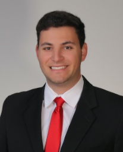

About Me

Ryan Scarff grew up in Southern California close to Laguna Beach, CA. He graduated high school in 2013 and then went on to attend University of California, Berkeley. At UC Berkeley, Ryan studied economics and graduated with a Bachelor's Degree in Economics in 2017.
Connect With Me